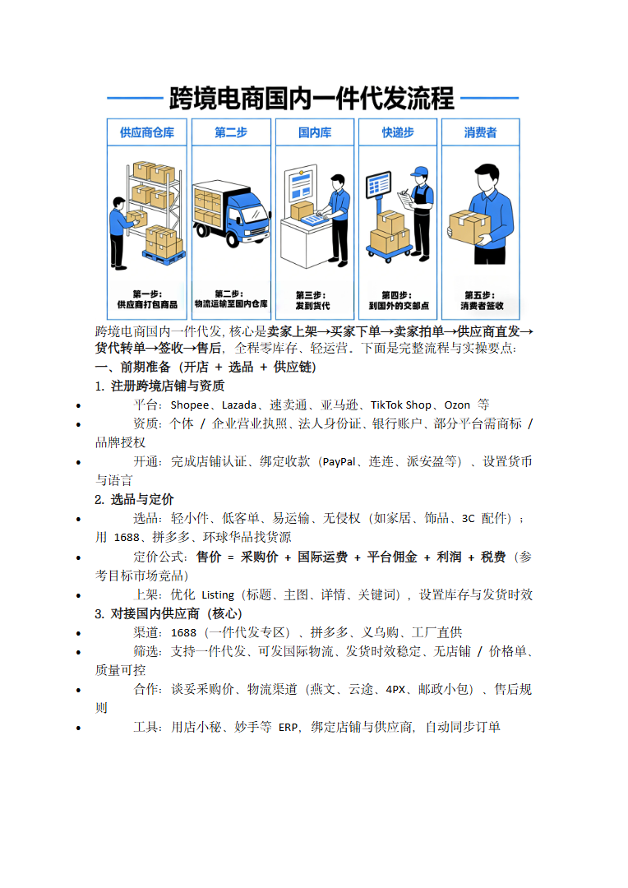

第 1 页

查看文字
跨境电商国内一件代发，核心是卖家上架→买家下单→卖家拍单→供应商直发→
货代转单→签收→售后，全程零库存、轻运营。下面是完整流程与实操要点：
一、前期准备（开店+选品+供应链）
1.注册跨境店铺与资质
平台：Shopee、Lazada、速卖通、亚马逊、TikTokShop、Ozon等
资质：个体/企业营业执照、法人身份证、银行账户、部分平台需商标/
品牌授权
开通：完成店铺认证、绑定收款（PayPal、连连、派安盈等）、设置货币
与语言
2.选品与定价
选品：轻小件、低客单、易运输、无侵权（如家居、饰品、3C配件）；
用1688、拼多多、环球华品找货源
定价公式：售价=采购价+国际运费+平台佣金+利润+税费（参
考目标市场竞品）
上架：优化Listing（标题、主图、详情、关键词），设置库存与发货时效
3.对接国内供应商（核心）
渠道：1688（一件代发专区）、拼多多、义乌购、工厂直供
筛选：支持一件代发、可发国际物流、发货时效稳定、无店铺/价格单、
质量可控
合作：谈妥采购价、物流渠道（燕文、云途、4PX、邮政小包）、售后规
则
工具：用店小秘、妙手等ERP，绑定店铺与供应商，自动同步订单